תכנית המכר מול המודל התלת־ממדי
קדמא עץ אפרים · בניין ד · דירה 1. בכל חדר: משמאל הקטע מתכנית המכר כמו שהוא, מימין רק מה שיש במודל, באותו קנה מידה. ירוק = פריט מהתכנית; כחול = חלון; כתום = דלת או מעבר; צלב אדום = נקודת הצפייה.
22 מידות מודפסות נבדקו מול המודל; הסטייה הגדולה ביותר 4.4%. ממצאים פתוחים: 11 מתוך 28.
המידות המודפסות בתכנית מול המודל
| חדר | מודפס (ס״מ) | במודל (ס״מ) | הפרש (ס״מ) | הפרש | הערה |
|---|---|---|---|---|---|
| מטבח | 460 | 462.2 | +2.2 | +0.5% | |
| מטבח | 240 | 241.3 | +1.3 | +0.5% | |
| מזווה | 155 | 155.1 | +0.1 | +0.1% | |
| מזווה | 175 | 176.6 | +1.6 | +0.9% | |
| חדר דיור | 410 | 408.9 | -1.1 | -0.3% | |
| כניסה ופינת אוכל | 335 | 335.0 | +0.0 | +0.0% | |
| חדר משפחה | 325 | 325.0 | -0.0 | -0.0% | |
| חדר משפחה | 285 | 286.6 | +1.6 | +0.6% | |
| שירותים | 150 | 152.2 | +2.2 | +1.5% | |
| שירותים | 90 | 92.3 | +2.3 | +2.6% | |
| חדר שינה הורים | 298 | 298.2 | +0.2 | +0.1% | |
| חדר שינה הורים | 383 | 383.2 | +0.2 | +0.1% | |
| חדר רחצה | 298 | 284.9 | -13.1 | -4.4% | המידה המודפסת כוללת קיר סמוי של 13 ס״מ מאחורי האסלה; במודל הוא בנוי כקיר |
| חדר רחצה | 125 | 125.3 | +0.3 | +0.2% | |
| חדר שינה | 260 | 261.3 | +1.3 | +0.5% | |
| חדר שינה | 338 | 338.0 | +0.0 | +0.0% | |
| חדר שינה | 260 | 261.4 | +1.4 | +0.5% | |
| חדר שינה | 338 | 337.6 | -0.4 | -0.1% | |
| חדר אמבטיה | 225 | 226.6 | +1.6 | +0.7% | |
| חדר אמבטיה | 185 | 186.2 | +1.2 | +0.7% | |
| ממ"ד חדר שינה | 295 | 295.5 | +0.5 | +0.2% | |
| ממ"ד חדר שינה | 370 | 368.4 | -1.6 | -0.4% |
מטבח
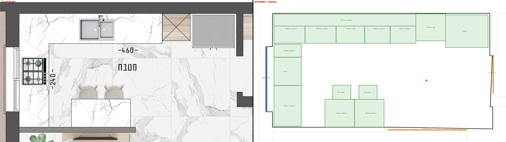
במודל: ארון מטבח ×8 · כיור מטבח · כיריים · ארון גבוה · fridge · מדפי מטבח · כיסא בר ×2
פתחים: מעבר פתוח 81 ס״מ · מעבר פתוח 166 ס״מ · חלון 138 ס״מ
- תוקן האי ישר ומקביל לקירות, עם שני כיסאות בר. במודל האי היה מסובב 28°, והכיסאות היו כיסאות נמוכים עם משענת.
- תוקן הגוש האפור בקצה המזרחי של המשטח הצפוני נבנה כמקרר נירוסטה. קודם היה ארון גבוה.
- פתוח שאלה אליך: הפס האפור־בהיר בין האי למזנון הטלוויזיה מצויר בגוון בהיר מהקירות. האם זה קיר מלא או קיר נמוך? במודל הוא קיר מלא.
- פתוח שאלה אליך: הריבוע עם האיקס ליד המקרר נבנה כארון גבוה. אם זה פיר או משהו אחר, תגיד.
- פתוח מדפי הקיר מעל משטח הכיור אינם מצוירים בתכנית. הם תוספת של הסגנון, ויוחלטו יחד עם המראה.
מזווה
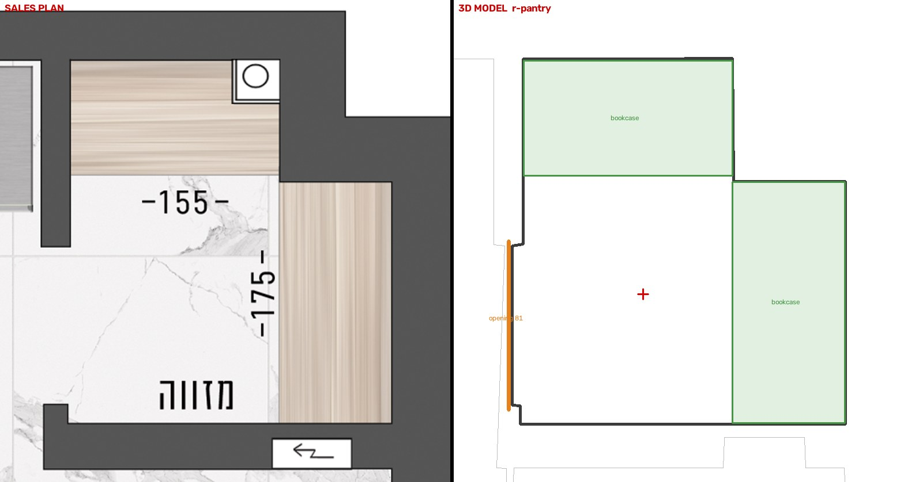
במודל: מדפים ×2
פתחים: מעבר פתוח 81 ס״מ
- פתוח ריבוע לבן קטן עם עיגול בפינה (כנראה צינור או ניקוז) לא נבנה. אותו סימן מופיע גם בשירותים ובאמבטיה.
חדר דיור
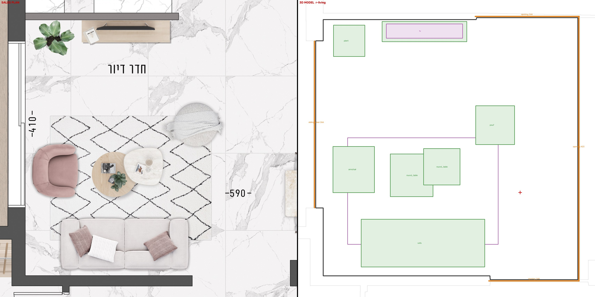
במודל: שטיח · ספה · כורסה · מזנון טלוויזיה · טלוויזיה · עציץ · שולחן עגול ×2 · פוף
פתחים: מעבר פתוח 166 ס״מ · מעבר פתוח 423 ס״מ · מעבר פתוח 144 ס״מ · דלת הזזה 266 ס״מ
- תוקן שני שולחנות קפה עגולים, אחד עץ ואחד שיש, כמו בתכנית. במודל היה שולחן מלבני אחד.
- תוקן הפוף עגול ובגודל שבתכנית. במודל היה ריבוע קטן יותר.
- תוקן הכורסה בגודל ובמקום שבתכנית. במודל הייתה רחבה ב־25 ס״מ ונגעה בקיר ובשולחן.
- פתוח השטיח במודל קטן ב־20–25 ס״מ מהמצויר. פער קטן.
כניסה ופינת אוכל
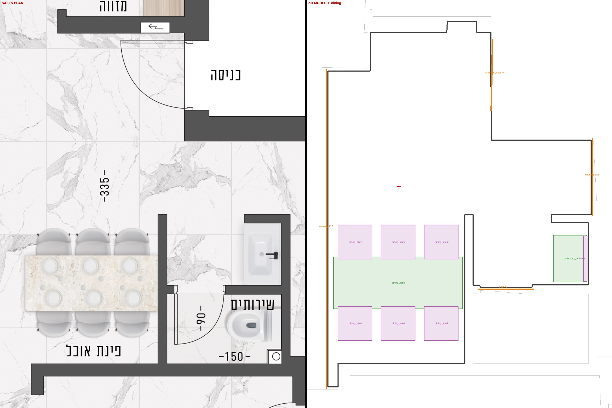
במודל: שולחן · כיסא ×6 · כיור רחצה · מראה
פתחים: מעבר פתוח 423 ס״מ · מעבר פתוח 102 ס״מ · דלת 72 ס״מ · דלת כניסה 94 ס״מ
- תוקן שטיחון הכניסה הוסר, כי הוא לא מצויר בתכנית.
- פתוח כיור האורחים במודל קצר בכ־15 ס״מ מהמצויר. פער קטן.
חדר משפחה
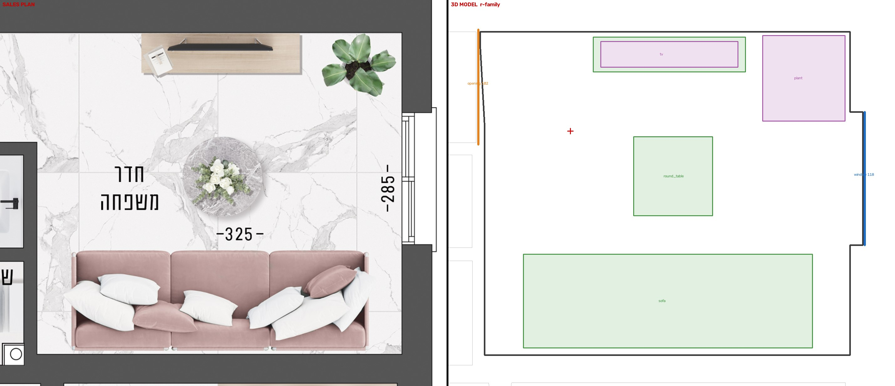
במודל: ספה · מזנון טלוויזיה · טלוויזיה · עציץ · שולחן עגול
פתחים: מעבר פתוח 102 ס״מ · חלון 118 ס״מ
- תוקן שולחן הקפה עגול, כ־70 ס״מ, כמו בתכנית. במודל היה מלבן של 120×60.
שירותים
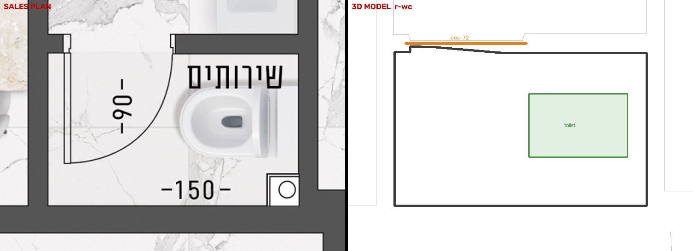
במודל: אסלה
פתחים: דלת 72 ס״מ
מסדרון
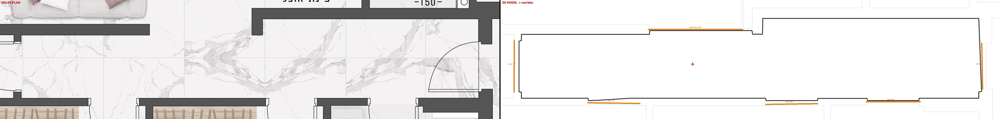
במודל: אין פריטים
פתחים: מעבר פתוח 144 ס״מ · דלת 83 ס״מ · דלת 71 ס״מ · דלת 79 ס״מ · דלת 79 ס״מ · דלת 80 ס״מ
חדר שינה הורים
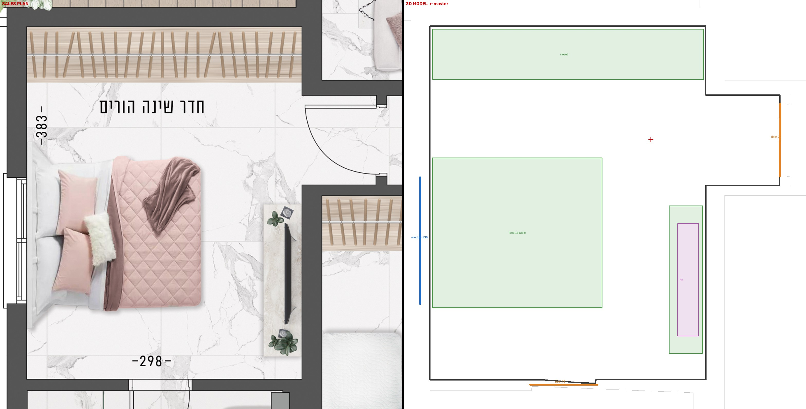
במודל: מיטה · מזנון טלוויזיה · טלוויזיה · ארון בגדים
פתחים: דלת 73 ס״מ · דלת 79 ס״מ · חלון 138 ס״מ
חדר רחצה
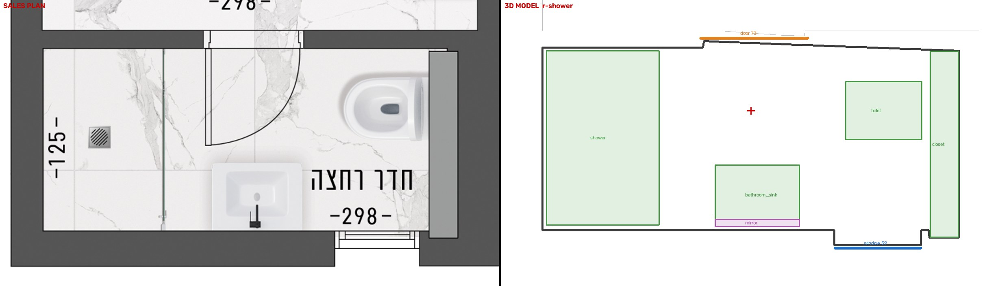
במודל: אסלה · כיור רחצה · מראה · ארון בגדים · מקלחון
פתחים: דלת 73 ס״מ · חלון 59 ס״מ
- תוקן השטיחון הוסר, כי הוא לא מצויר בתכנית.
חדר שינה
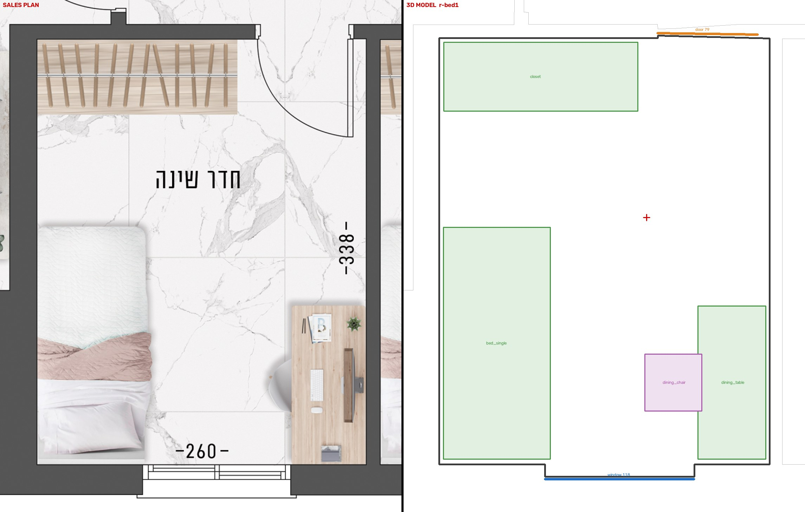
במודל: מיטה · שולחן · כיסא · ארון בגדים
פתחים: דלת 79 ס״מ · חלון 118 ס״מ
- תוקן מיטת יחיד, כמו בתכנית. במודל היא נבנתה מדגם של מיטה זוגית.
- פתוח כיסא שולחן הכתיבה רחוק כ־20 ס״מ ממקומו בתכנית. פער קטן.
חדר שינה
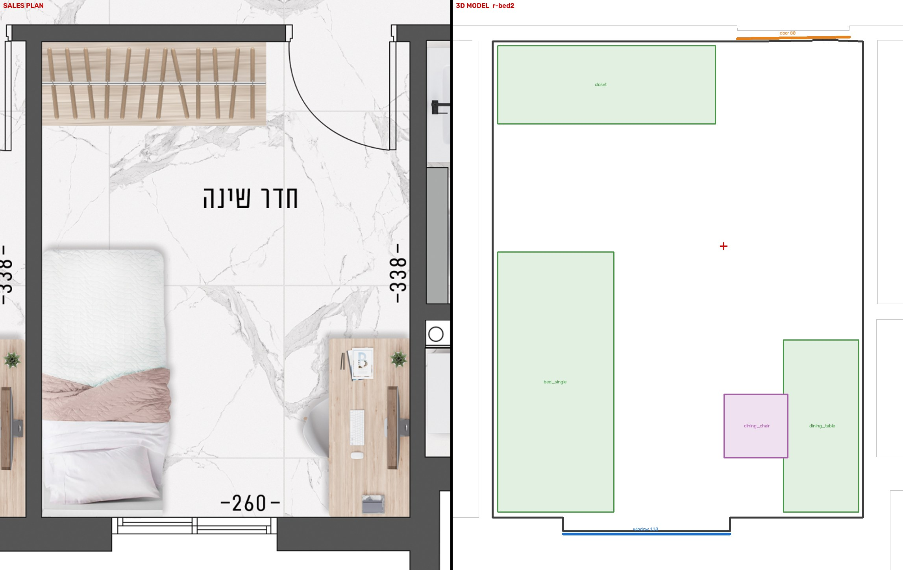
במודל: מיטה · שולחן · כיסא · ארון בגדים
פתחים: דלת 80 ס״מ · חלון 118 ס״מ
- תוקן מיטת יחיד, כמו בתכנית.
- פתוח כיסא שולחן הכתיבה רחוק כ־20 ס״מ ממקומו בתכנית. פער קטן.
חדר אמבטיה
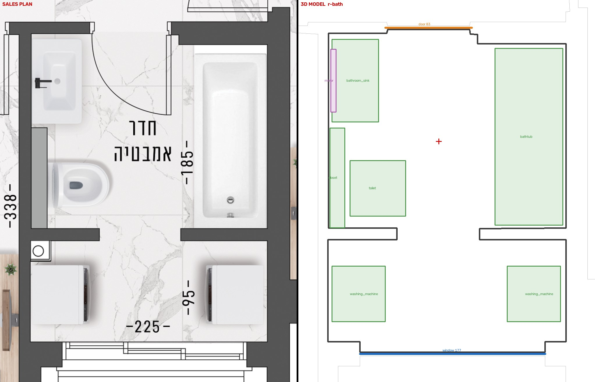
במודל: כיור רחצה · מראה · אסלה · אמבטיה · ארון בגדים · מכונת כביסה / מייבש ×2
פתחים: דלת 83 ס״מ · חלון 177 ס״מ
- תוקן האמבטיה, מכונת הכביסה והמייבש נבנו כמו בתכנית. במודל הראשון האמבטיה לא נבנתה והמכונות היו ארונות.
- פתוח דלת האמבטיה ברוחב 83 ס״מ במודל, מול כ־70 ס״מ בתכנית. לבדיקה במדידה.
ממ"ד חדר שינה
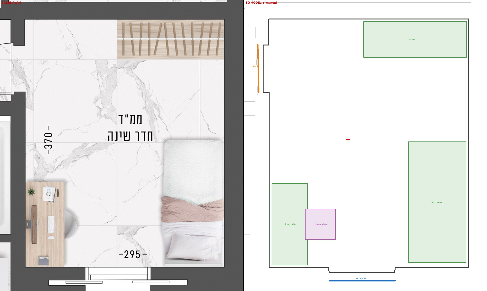
במודל: מיטה · שולחן · כיסא · ארון בגדים
פתחים: דלת 71 ס״מ · חלון 98 ס״מ
- תוקן מיטת יחיד, כמו בתכנית.
- פתוח כיסא שולחן הכתיבה רחוק כ־20 ס״מ ממקומו בתכנית. פער קטן.
מרפסת
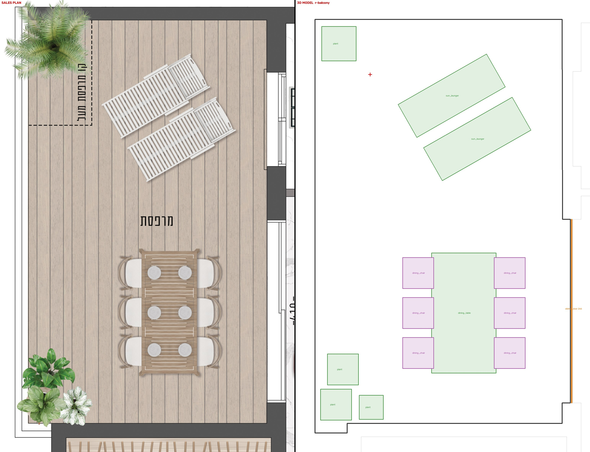
במודל: שולחן · כיסא ×6 · עציץ ×4 · מיטת שיזוף ×2
פתחים: דלת הזזה 266 ס״מ
- תוקן הדקל הגדול עומד עכשיו בפינה הצפון־מערבית, כמו בתכנית. במודל היה עציץ בפינה הצפון־מזרחית, כ־3 מטר משם.
- תוקן שלושה עציצים בפינה הדרום־מערבית, כמו בתכנית. במודל היה עציץ אחד.
- תוקן המרפסת פתוחה לשמיים. הסימון «קו מרפסת מעל» בתכנית מכסה רק פינה של כ־0.9×1.7 מ׳, ובמודל המרפסת כולה הייתה מקורה.
- תוקן שתי מיטות השיזוף נבנו כמיטות שיזוף. במודל הראשון עמד שם סט ביסטרו.
מסתור כביסה
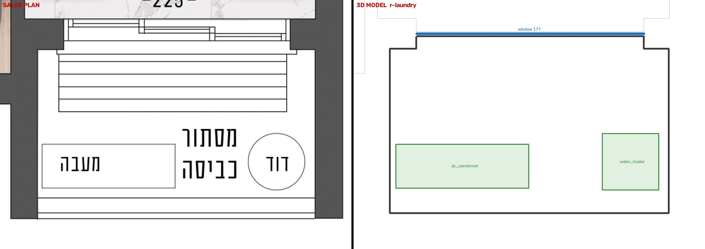
במודל: ac_condenser · water_heater
פתחים: חלון 177 ס״מ
- תוקן מעבה המזגן והדוד נוספו. במודל המסתור היה ריק.
- פתוח גוש של חמש רצועות מתחת לחלון (כנראה מתלה כביסה) לא נבנה.